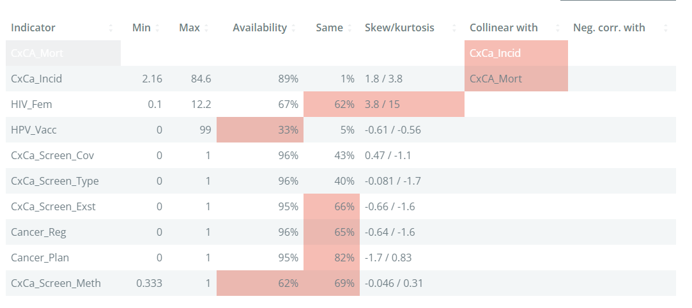
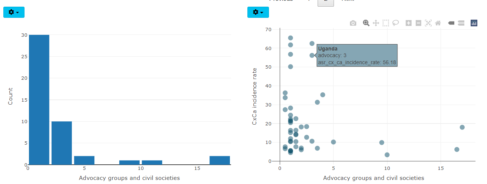

12 Indicator statistics
The “Descriptive stats” tab, which is found in the “Explore” tab group, gives statistics of interest for each indicator and aims to point out potential statistical issues.
12.1 Table
The table in the main window has one row for each indicator. The columns give some statistics of interest, focusing on statistics that might identify potential problems. The table from the example data set is shown here:

The min and max columns give the minimum and maximum, respectively. This is worth checking because it could identify erroneous points, or mistaken definitions. For example, if an indicator is a percentage, it should be generally between 0-100%.
The Availability column gives the data availability of that indicator. If the data availability is below 66%, the cell will be highlighted. In general, indicators with very low data availability are candidates for removal unless they are essential to the framework.
The Same column gives the percentage of values in the indicator which share the same value. If an indicator has a high percentage, this means that is relatively weak in differentiating between units, which is at the end of the day the role of indicators. Here, any indicator with more than 50% points having the same value is highlighted.
The skew/kurtosis column reports the skew and kurtosis. Since these measures are used to detect outliers (see again Chapter 7 for why we may want to check outliers), any indicators which pass the thresholds are highlighted. The thresholds are absolute skew > 2, and kurtosis > 3.5. An indicator has to exceed both thresholds to be flagged.
The final two columns, Collinear with and Neg. corr with give details of any indicators with which the indicators is collinear with (defined as correlation > 0.9), or negatively correlated with (defined as correlation < -0.4), within the same aggregation group at level 2. Collinearity between indicators can point to double counting, where effectively the same information is present in two indicators. Negative correlations can cause problems in aggregation, because high values of one indicator can cancel out low values of the other.
Altogether, the table aims to highlight at a glance any possible statistical issues with indicators. Keep in mind that indicators are never “perfect”, and there will likely be various issues flagged in your data set. Of the criteria in the table, the data availability is probably the most important - indicators with low availability can add little, and in the worst case be misleading. The others can be considered as “small flags”, but if an indicator has multiple flags, it could be examined more closely to see whether it is really worth including it or not.
12.2 Charts
The charts below the table allow you to visualise indicators and pairs of indicators.

Clicking on a row in the table will visualise the selected indicator in the left plot as either a violin plot, or as a histogram. The plot type can be changed by clicking on the “gear” icon in the top left of the plot.
On the right side, the scatter plot shows the same selected indicator on the x-axis. The indicator to plot on the y-axis is selected by clicking on the “gear” icon - there you can also change the axes to log axes if needed: this is useful to more clearly visualise skewed indicators.